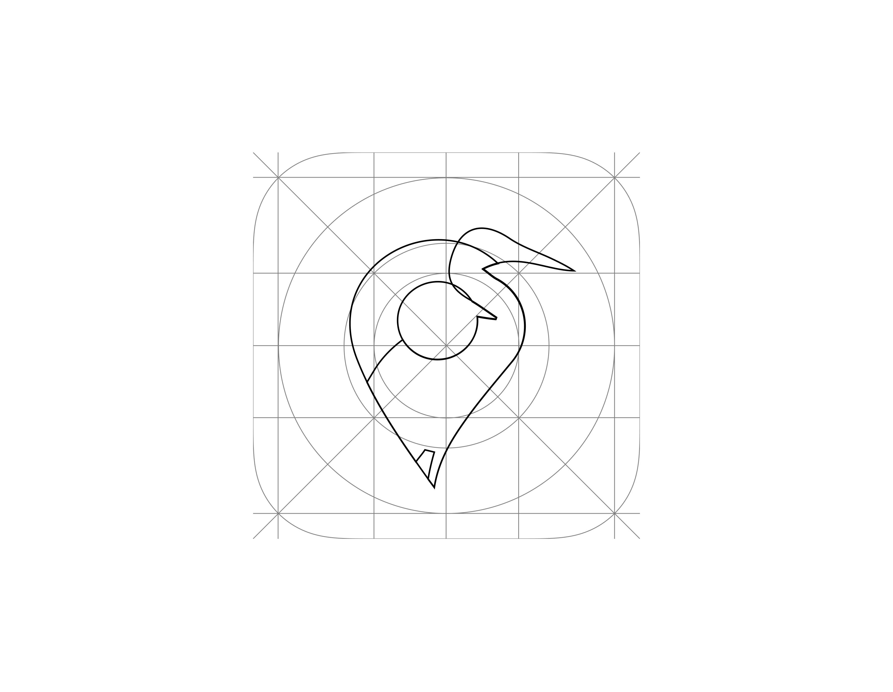

在Plan de la Garde自然公园多次实地观察后，我和Margaux发现，一些有趣的观景点并没有很好地被标示给游客。因此，我们决定开发一款移动应用来解决这个问题。应用的基本原理是一套地图系统，用户可以在其中看到各类兴趣点：植物、水源、野生动物与植被。
用户既可以参观公园标注的兴趣点，也可以添加自己发现的地点。随后，系统会为每个地点生成一个公开图库，让用户可以追踪自然的变化。


不同深浅的绿色直接唤起大自然的联想，象征着清新与活力。它们营造出一种令人放松的氛围，鼓励探索与亲近环境。我们加入了一种米色色调，带来温暖与亲切感，平衡主导的绿色。这为用户创造出一个视觉上令人愉悦、充满邀请感的空间。
最后，橙色的加入带来了一抹动感。这种鲜明的色彩能吸引注意力，增添运动般的活力，鼓励探索与户外活动。这些色彩共同营造出一种和谐而富有吸引力的视觉体验，完美契合我们的主题。
A B C D E F G H I J K L M N O P Q R S T U V W X Y Z
a b c d e f g h i j k l m n o p q r s t u v w x y z
0 1 2 3 4 5 6 7 8 9
Erica One Regular 400
A B C D E F G H I J K L M N O P Q R S T U V W X Y Z
a b c d e f g h i j k l m n o p q r s t u v w x y z
0 1 2 3 4 5 6 7 8 9
Trial Black 900
A B C D E F G H I J K L M N O P Q R S T U V W X Y Z
a b c d e f g h i j k l m n o p q r s t u v w x y z
0 1 2 3 4 5 6 7 8 9
Trial Regular 400
标志将定位图标与苍鹭相结合，象征科技与自然之间的平衡。图标代表追踪功能，而苍鹭则呼应公园的野生动物与宁静氛围。这种融合突显了引导用户的同时，也让他们与自然环境保持连结的理念。


我们需要设计出清晰且能激发移动感的标记。因此，我们选择从一滴水的轮廓中汲取灵感。


在思考如何让所有受众都能参与创作过程时，开发一款移动应用成为了显而易见的选择。因此，我们决定使用Figma软件来开发这款应用。
在制作Mouvaplan的过程中，我选择了Figma，因为它是将我的设计构想变为现实最简单快速的方式。这款工具让我能够轻松地对想法进行原型设计，并清晰地把握界面的整体效果。此外，它的灵活性与易用性让我能够专注于创意本身，而不是技术细节。
试用应用


愿这份创作，唤醒你的灵感。 (• ◡•)